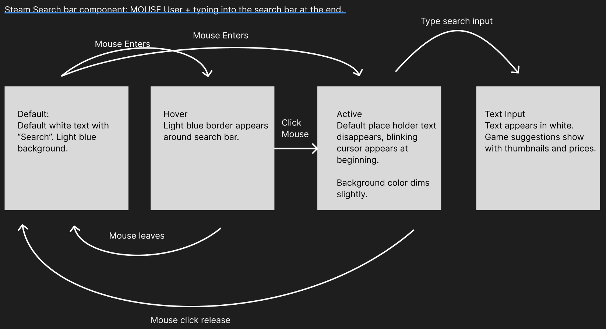
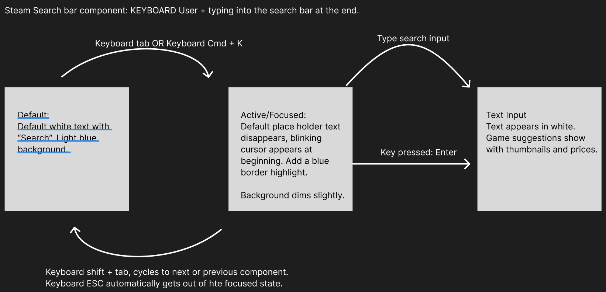

Steam search bar mouse state model:
Steam search bar keyboard state model:
Steam search bar revised mouse state model:

Steam search bar revised keyboard state model:

Redesigning the Steam Search Bar
Kat Holmes' Reflection
Kat Holmes’ presentation shows how intuitive designs can have unintended consequences for different users
(like the automated toilet sensor example). This definitely applies to UI components, because designers and developers
expect users to see visual changes with mouse inputs, and this is reflected in common, traditional design choices. In most UIs
I’ve come across, I noticed that mouse users are the first priority, then the mobile users, then the keyboard only users and
screen reader users being considered last. To address this, UI components need to have many ways the user can interact with it.
Without proper ARIA labels, the screen reader may miss out on important information. Keyboard-only users may struggle if
the focus highlights state logic isn’t implemented well with the tab and shift + tab functionality. Holmes’ presentation shows
that designers and developers should prioritize having many ways for people to “participate” instead of having a “one thing for all people”;
UI components should be able to be interacted with in multiple ways, not just one interaction that everyone is forced to work with.